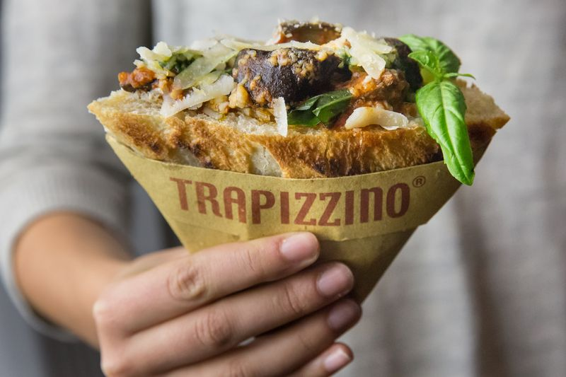
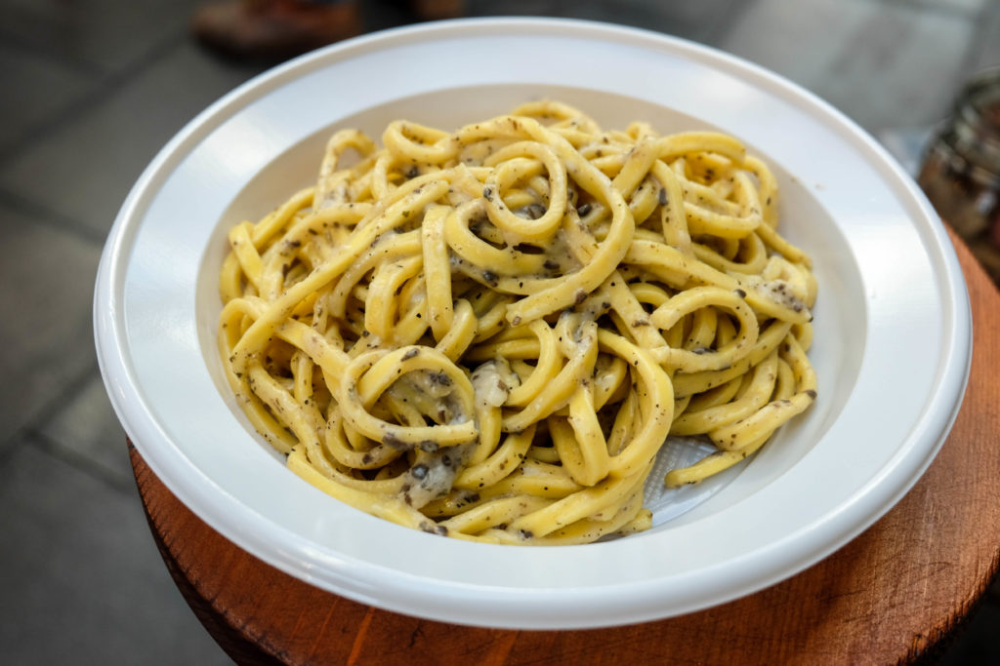
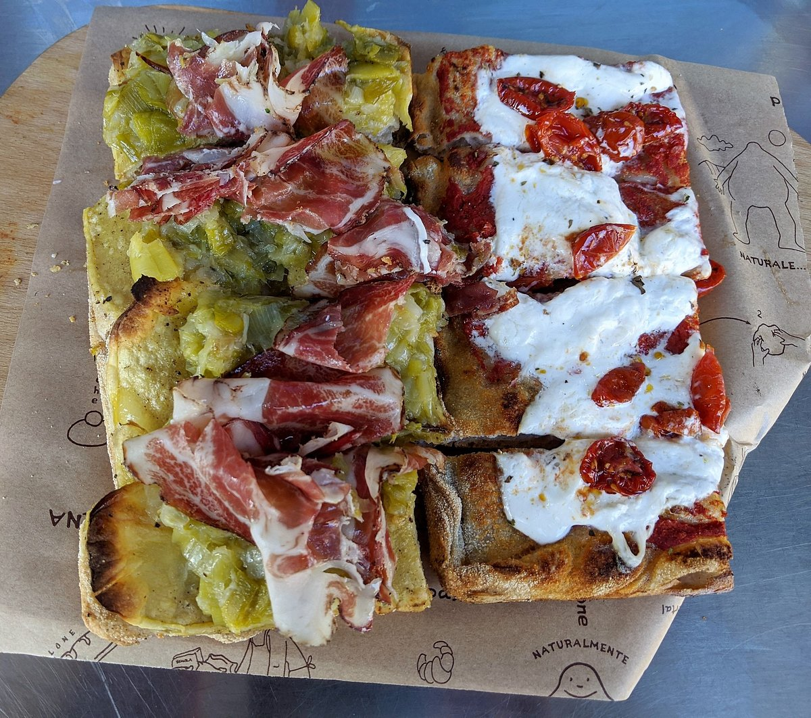

Discover the perfect spot to satisfy your late-night cravings!

With multiple locations around the city, Trapizzino offers a unique twist on traditional Roman street food. The signature dish, "Trapizzino," is a triangular-shaped bread pocket stuffed with classic Roman fillings like braised oxtail, chicken and eggplant parmigiana. Open late, Trapizzino is perfect for a casual yet flavorful snack after a night out. The savory fillings, combined with the crispy bread, make for a satisfying meal that won't break the bank. Whether you're craving something hearty or a quick bite, Trapizzino delivers a memorable late-night experience in the heart of Rome.

For your late-night pasta cravings in Trastevere, Pasta & Go is the go-to spot. This bustling, hole-in-the-wall joint is renowned for its fresh, homemade pasta that you can grab to go, making it perfect for a quick late-night bite. They offer classic Roman pasta dishes such as cacio e pepe, carbonara, and amatriciana, all cooked fresh and served hot. You can choose the type of pasta, sauce and add ons to customize to your liking. You’ll also find their signature suppli (fried rice balls) and other Roman street food staples, making it a favorite for locals and tourists alike. Open late into the night, Pasta & Go is the perfect stop after a long evening exploring the Trastevere neighborhood.

If you’re exploring Rome and need a quick, unforgettable bite after a long day of sightseeing or studying, Pizzarium is the go-to spot for gourmet pizza by the slice. Located conveniently near the Vatican, this local favorite specializes in Roman-style pizza by the slice, making it perfect for grabbing something to eat without breaking the bank. Created by celebrated pizza chef Gabriele Bonci, Pizzarium is famous for its soft, airy crust and inventive toppings that change with the season. Whether you’re craving a classic like Margherita or something more adventurous, every slice is delicious. With affordable prices and no reservations needed, it’s ideal for late-night eats, making it a popular hangout for both locals and students alike.